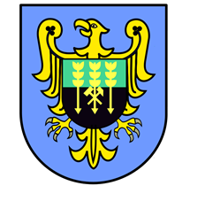
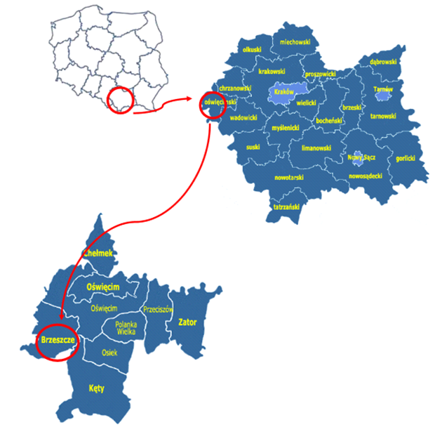

Gmina Brzeszcze położona jest w zachodniej części województwa małopolskiego, na styku z województwem śląskim i
jest jedną z dziewięciu gmin w powiecie oświęcimskim. Gmina miejsko-wiejska Brzeszcze zajmuje powierzchnię 46 km2 i
zamieszkiwana jest przez 21710 osób. Miasto Brzeszcze liczy 11637 mieszkańców, a jego powierzchnia wynosi 19 km2.
Gmina od północnego wschodu graniczy z gminą Oświęcim, od południowego wschodu z gminą Kęty, a od zachodu
z gminą Miedźna (województwo śląskie) oraz od południa z gminą Wila- mowice (województwo śląskie).
W skład gminy wchodzi pięć sołectw: Jawiszowice, Przecieszyn, Skidziń, Wilczkowice oraz Zasole.
Herb gminy Brzeszcze
Mapa Gmina Brzeszcze na tle Polski, województwa małopolskiego oraz powiatu oświęcimskiego
